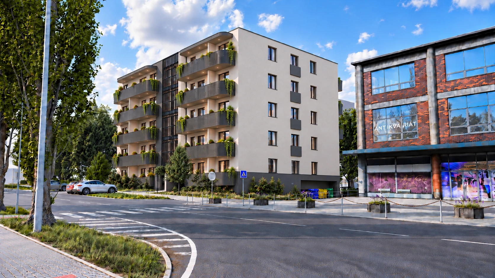

460 000 Kč37 míst v přehledu

NOVÉ BYDLENÍ V OTROKOVICÍCH
Vaše nová
kapitola.
Vlastní prostor. Vlastní rytmus.
Objevte bydlení v Rezidenci Alexandra.
01 REZIDENCE ALEXANDRA
Prostor, ve kterém
začíná domov.
Ranní káva, první vlastní klíče i místo pro společné večery. Alexandra dává těmto představám konkrétní podobu.
Prohlédněte si návrh domu v Otrokovicích a najděte dispozici, která je blízká vašemu životu. Od kompaktního 1+kk po třípokojové bydlení.
Poznat architekturu1+kk — 3+kkDISPOZICE V PŘEHLEDU
35,7 — 65,15 m²CELKOVÉ PLOCHY DLE CENÍKU
6 podlažíNADZEMNÍ PODLAŽÍ V PLÁNECH
02 / ARCHITEKTURA
Klidná forma.
Osobitý výraz.
Světlá fasáda, tmavé linie a rytmus balkonů. Prozkoumejte dům z více stran ve vizualizacích dodaných k projektu.
Levá strana · varianta s balkony
Levé balkony jsou ve dvou variantách. Konečné řešení bude potvrzeno.
03 UVNITŘ VAŠEHO DOMOVA
Každý den.
Po svém.
Obývací pokoje, kuchyně, ložnice i koupelny. Prohlédněte si návrhy interiérů ve 4K — od denního světla po strukturu materiálů.
Interiéry v detailuObývací prostor · 3+kkRender návrhu · 4K
Pohledy vyrenderované z prostorových modelů podle dodaných podkladů. Nábytek, dekorace, materiály a finální rozsah dodávky potvrdí prodejce.
04 / VYBERTE SI SVŮJ DOMOV
Každé patro.
Nové možnosti.
Najděte své místo v domě. Vyberte podlaží, prozkoumejte rozložení bytů a otevřete detail toho svého.
6 podlaží · 51 jednotek · ceník k 14. 10. 2026Stavy prodeje zatím nejsou potvrzené. Dostupnost jednotlivých bytů ověří prodejce.
Připravujeme mapu domu…
01 VYBERTE PODLAŽÍ
Prostorové schéma podlaží.
Kliknutím otevřete celé patro.
02 NAJDĚTE SVŮJ BYT
2. nadzemní podlaží
Vyberte byt přímo v půdorysu.Původní výkres ↗
Jednotka 53 je v ceníku vedena v 1. NP. Její polohu nelze z dodaných podkladů spolehlivě přiřadit, proto ji zde nevybarvujeme.
V tomto podlaží žádný byt neodpovídá zvoleným filtrům.
Přejít k vybranému bytu ↓DOSTUPNOST V PODLAŽÍDostupné 0Rezervované 0Prodané 0Na dotaz 10Vybraný byt
Byty v přehledu Parametry, ceny a porovnání
| BYT | DISPOZICE | PODLAŽÍ | CELKOVÁ PLOCHA | ORIENTAČNÍ CENA | DOSTUPNOST | Uložit a zobrazit detail |
|---|
Takovou kombinaci právě nemáme.
Zkuste jiné podlaží nebo dispozici.
05 / PROSTOR Z VLASTNÍ PERSPEKTIVY
Projděte si
svůj domov.
Rozhlédněte se v zařízeném bytě a projděte jednotlivými místnostmi. Tři typové dispozice, devatenáct propojených 360° stanovišť a materiály navazující na novou galerii.
Vstoupit do prohlídek bytů ↗Prohlédnout dům a varianty balkonů ↗
Propojená 360° panoramata ze zařízených 3D modelů podle půdorysů bytů 04, 02 a 01. Vybavení je návrhové, výhledy ilustrativní.
06 / PRAKTICKÁ STRÁNKA BYDLENÍ
Místo i pro
vaše auto.
K bytu lze dokoupit jedno parkovací místo. Konkrétní přiřazení a dostupnost ověřte při výběru jednotky.
07 / MÍSTO PRO VAŠI NOVOU KAPITOLU
Doma
v Otrokovicích.
Rezidence Alexandra představuje návrh nového bydlení v Otrokovicích. Poznejte projekt osobně a proberte s prodejcem konkrétní polohu i návaznost na místa, která jsou pro vás důležitá.
Prohlédnout město na mapěOdkaz zobrazuje město. Přesnou adresu projektu potvrdí prodejce.
08 / VŠECHNY SOUVISLOSTI
Blíže
k detailu.
Projděte si původní půdorysy podlaží a podklady k materiálům. Dokumentace podlaží je datována 6. 10. 2026.
Materiály a vybavení
Dlažby a obklady PDF ↗Zařizovací prvky PDF ↗Vchodové dveře PDF ↗Jde o dodané návrhové podklady. Závazný standard a rozsah dodávky potvrdí prodejce.
09 / DOBRÉ VĚDĚT
Vaše otázky.
Konkrétní odpovědi.
Jak zjistím, zda je vybraný byt volný?
Dodaný ceník neobsahuje vyplněné stavy jednotek. Aktuální dostupnost ověří Martin Hebelka. V detailu bytu si můžete připravit e-mail s číslem vybrané jednotky.
Co je zahrnuto v uvedené ceně?
Web uvádí orientační cenu bytu z ceníku k 14. 10. 2026. Parkování se dokupuje samostatně. Konečnou cenu, daňový režim, standard a přesný rozsah dodávky potvrdí prodejce.
Jak číst plochy u jednotlivých bytů?
Celková plocha a otápěná plocha jsou převzaté jako dvě samostatné hodnoty z ceníku. Rozdíl nepovažujeme automaticky za balkon či sklep. Přesné rozdělení ploch je potřeba potvrdit podle dokumentace konkrétní jednotky.
Je zobrazená podoba domu finální?
Obrazové podklady jsou architektonické vizualizace. Pro levou část domu existuje varianta s balkony i bez nich; jejich konečná podoba není v podkladech rozhodnuta. Nábytek a dekorace interiérů ukazují možnosti zařízení.
Kdy se mohu nastěhovat?
Potvrzený harmonogram realizace a předání není součástí dodaných podkladů. Aktuální termíny a další postup vám sdělí prodejce.
Jak funguje poptávka na tomto webu?
Formulář připraví zprávu ve vašem e-mailovém programu. Před odesláním si ji můžete upravit. Samotný web zprávu neodesílá ani nevytváří rezervaci.
10 / DALŠÍ KROK JE NA VÁS
Pojďme najít
váš domov.
Máte vybraný byt, nebo se teprve rozhlížíte? Probereme dispozice, aktuální dostupnost i další kroky.
Martin HebelkaKontakt pro zájemce o projekthebelka@dumrealit.cz ↗